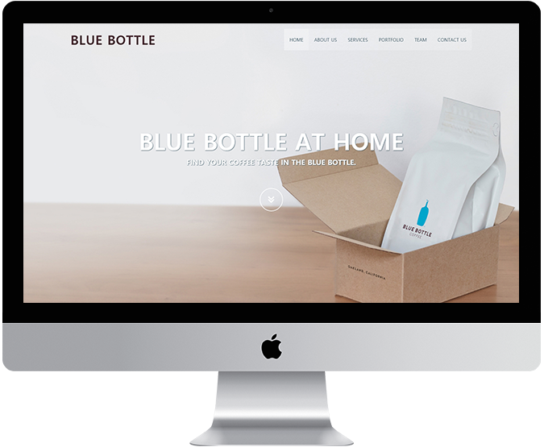
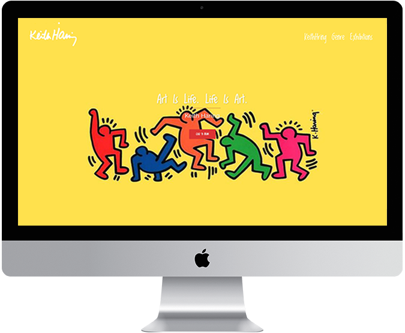

이 주 연
Web Publisher / 프론트개발자- Birth.
- 1995.02.03
- Email.
- ju0203ju@naver.com
- Phone.
- 010.2901.2637
- Skills(Develop)
- HTML5/CSS3, JavaScript, jQuery, Ajax(Json),
php(include), Bootstrap, CMS(Wordpress)
- Skills(Design)
- Photoshop, Illustrator, AfterEffect, Premiere, Indesign
- Career
- 웹 디자인 및 퍼블리싱과 전반적인 홈페이지 관리

블루스퀘어
Desktop 웹 사이트 제작
사이트 기획의도
기존 웹사이트의 산만한 Interface, Image Alt 누락으로 인한 접근성 부재를
문제점으로 삼아 트렌드에 맞는 UI와 웹 표준을 지향하는 마크업으로
접근성을 고려하여 새롭게 구축하였습니다.
- 제작기간
- 4 Month
- 제작스킬
- Adobe Photoshop, Illustrator
- HTML5, CSS3, Javascript, jQuery, Ajax, JSON, PHP, MySqlW3C 웹표준 마크업 검사, 웹접근성검사(K-WAH), 다른 해상도 기기별 크로스브라우징 완료
- 기능구현
- 회원가입, 로그인/로그아웃, 게시판(일반, 이미지 첨부, 검색-전페이지, 문의기능)
블루스퀘어
mobile 웹 사이트 제작
사이트 기획의도
메인화면에서 사용자가 원하는 경험을 중심으로 퀵메뉴를 구분하고,
컨텐츠의 기능과 성격에 맞춰 위계를 재정렬한 모바일 버전입니다.
- 제작기간
- 3 Weeks
- 제작스킬
- Adobe Photoshop, Illustrator
- HTML5, CSS3, Javascript, jQuery, MySql, PHP, CSS3(media query)CSS3(media query)와 스크립트를 이용한 기기별 해상도 서비스W3C 웹표준 마크업 검사, 웹접근성검사(K-WAH), 대표 기기별 테스트 완료
- 기능구현
- 회원가입, 로그인/로그아웃
몬스터 주식회사
Responsive 웹 사이트 제작
사이트 기획의도
영화 "몬스터주식회사"를 주제로 한 사이트로써, 다양한 디바이스에서
폭 넓게 이용할 수 있도록 반응형 웹을 구축하였습니다.
- 제작기간
- 3 Days
- 제작스킬
- Adobe Photoshop, Illustrator
- HTML5, CSS3(media query), JavaScript, jQuery를 이용한 디바이스/해상도별 반응형 UI 구현W3C 웹표준 마크업 검사, 웹접근성검사(K-WAH), 대표 기기별 테스트 완료
- 기능구현
- PC, 태블릿, 모바일 해상도에 따른 최적화된 UI 구현


블루보틀
bootstrap 웹 사이트 제작
사이트 기획의도
평소 관심있던 주제를 워드프레스 사이트에 접목해서
컨셉을 잡고 디자인을 해보고싶어 진행했습니다.
- 제작기간
- 3 Days
- 제작스킬
- HTML5/CSS3
- 기능구현
- 부트스트랩 프레임워크를 이용한 PC, 태블릿, 모바일 해상도에 따른 최적화된 UI구현

키스해링
wordpress 웹 사이트 제작
사이트 기획의도
평소 관심있던 주제를 워드프레스 사이트에 접목해서
컨셉을 잡고 디자인을 해보고싶어 진행했습니다.
- 제작기간
- 2 Days
- 사용테마
- SYDNEY
- 기능구현
- PC, 태블릿, 모바일 반응형 웹사이트로 해상도에 따른 UI 변경, 갤러리, 슬라이드 등 기능 포함
